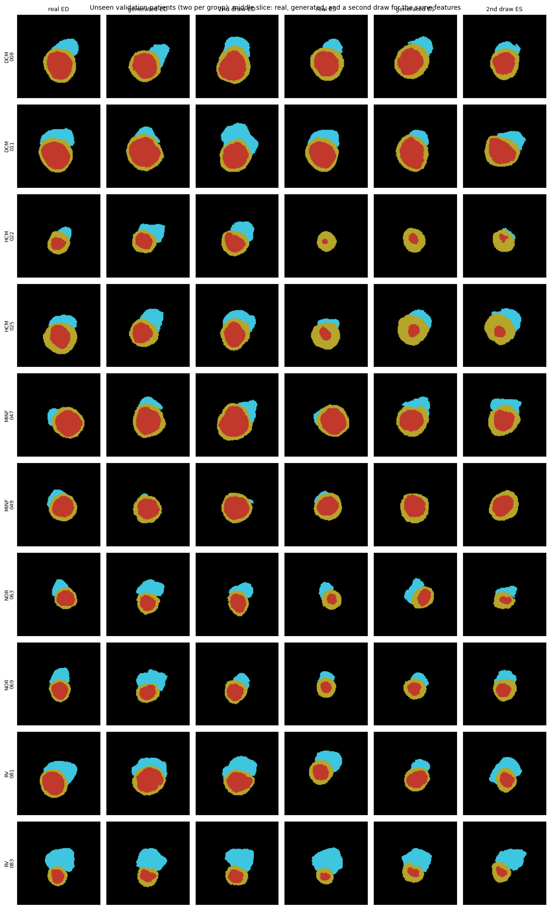
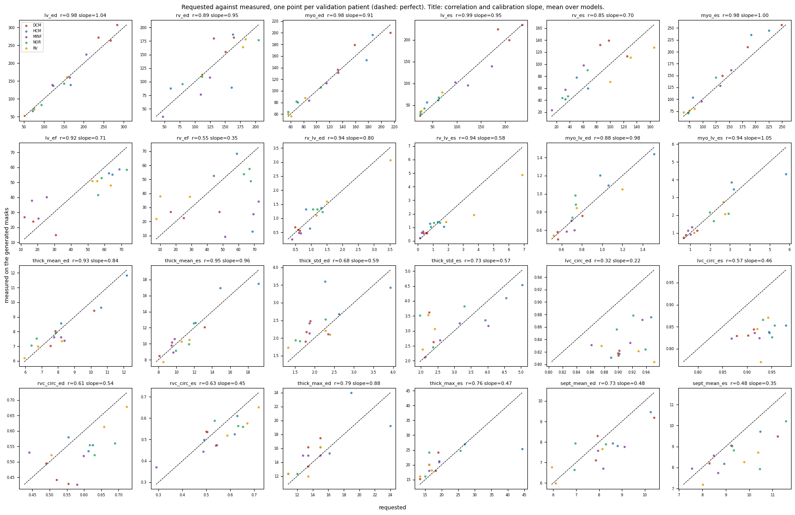

The generator in this project is given a clinical profile of 26 numbers. This page explains what each number is, how it is calculated from a cardiac MRI mask, what values it takes in the ACDC data, and how well the generated masks give it back.
A cardiac MRI slice is a grey image of the heart. A segmentation mask is the same slice with every pixel labelled: background, right ventricle (RV), myocardium (the heart muscle wall) or left ventricle (LV, the main pumping chamber). A feature is a number calculated from the masks of a patient, such as the volume of the LV. Because a feature comes from a mask, it can be calculated again on a generated mask, and compared with the value that was requested.
Two moments of the heartbeat are used. ED is end-diastole, when the heart is most filled. ES is end-systole, when it is most squeezed. The five diagnosis groups of ACDC are NOR (normal), MINF (a past myocardial infarction), DCM (dilated cardiomyopathy: an enlarged, weakly pumping LV), HCM (hypertrophic cardiomyopathy: a thickened wall) and RV (an abnormal right ventricle).

Pick a feature to see how it is calculated and how its values differ between diagnosis groups.
Values by diagnosis group
Box: middle half of the 20 patients. Line: median. Whiskers: lowest and highest. Red dot: mean.
Mean per diagnosis group (20 patients each) and over all 100 patients. Click a row to open it in the explorer above.
| # | Feature | Column | Unit | NOR | MINF | DCM | HCM | RV | All, mean ± SD |
|---|
For 15 unseen validation patients, the masks generated from their features were measured again. The number is the correlation (r) between requested and measured values: 1 means the generated masks follow the requested values perfectly across patients. The reference mark shows what is left when every structure of the real masks is randomly grown or shrunk by one pixel (1.5 mm): a feature that already loses accuracy there cannot be expected to be reproduced better. Final mask generator, guidance 1, mean of two training seeds. The row bar shows r; the white tick shows the reference.
| Feature | r, generated masks | Reference r (1-pixel change) |
|---|
Rows marked with a red edge have r below 0.7. LV circularity at ED and septal thickness at ES are the weakest, and both are well below their reference value, so the generator can still improve on them. With 15 patients, differences of about 0.02 are within the noise between training seeds. Height and weight are not measured from masks and are not in this table.

The first 14 carry the information used to classify the five ACDC diagnoses (Wolterink et al.). The 12 shape features were added because the first masks were too regular. Every feature except height and weight comes from a mask, so the whole profile can be checked on every generated mask. That check is the point of the project: it shows whether the generator really responds to the clinical profile, not only whether the images look realistic.
Back to the feature list on the project page · Paper database